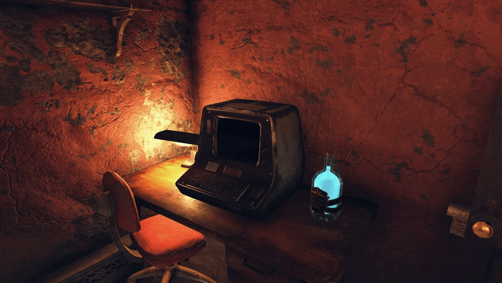
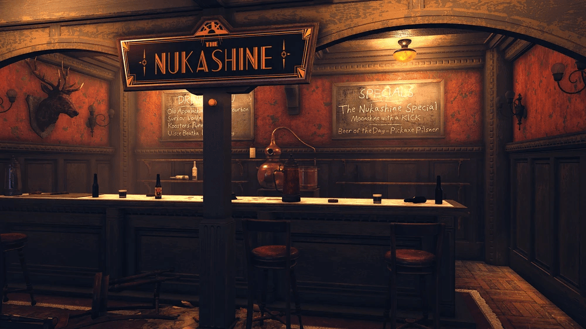
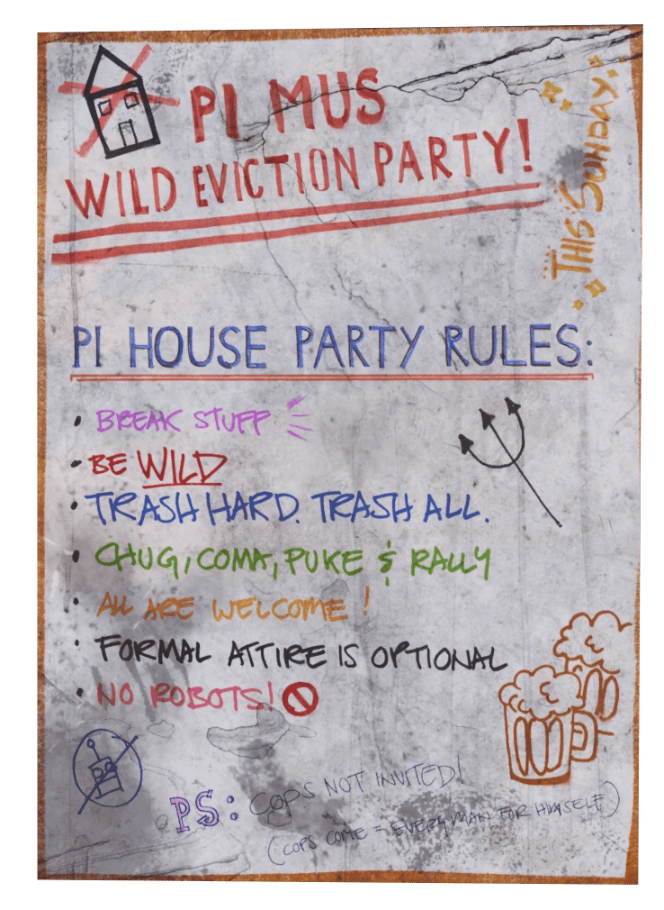

Wasted on Nukashine
「危険なほど強力な飲料の供給源を見つけ出せ。」
Wasted on Nukashine（ウェイステッド・オン・ヌカシャイン）は、『Fallout 76』のアップデート「Wild Appalachia」で導入されたサイドクエストです。
クイック攻略
パイ・ハウス（Pi house）で開催されているフラタニティ・パーティーに参加する。
建物を調査し、ヌカシャインを1瓶飲む。
2分間にわたってその飲料の効果を体験し、乱入してきたパーティー・クラッシャーたちを撃退する。
ラベルを読み、「ビッグ・アルのタトゥー・パーラー」の裏手へ行くことで、そこに記された謎を解く。
ビブと話す。
イータ・プサイ・ハウスを探索し、備品室のパスワードを入手する。
備品室を開ける。
ヌカシャインの6つの材料を入手する。
醸造ステーションでヌカシャインを作製する。
（任意）高速発酵槽を使用して発酵を早める。
報酬：醸造ステーションの設計図、発酵槽の設計図、ヌカシャイン×1、150キャップ、500 XP。
クエストステージ
ポスターを読む フラタニティ・パーティーに参加する パーティーの参加者が何を飲んでいたのか調査する
モーガンタウンにあるフラタニティ・ハウスに入ると、あまりに激しくて……人を死なせるほどのパーティーの残骸を発見した。
ここで何が起きたのか、何か手がかりを見つけられないだろうか。

ヌカシャインを1瓶飲む
パイ・ミュー支部の会長であるテッド・ドーフマンのターミナルには、ヌカシャインという新しいアルコール飲料に関するメッセージがいくつかある。
パーティーで死んでいた学生たちは皆、それを飲んでいたようだ。自分も一口試してみるべきだろう。
(02:00) ヌカシャインの効果を体験する
(任意) パーティー・クラッシャーを一掃する！
所持品にあるヌカシャインのラベルを読む
ヌカシャインを飲んだ後、意識を失った。
とんでもない飲み物だ。どこから来たのか突き止める価値があるかもしれない。
ボトルのラベルに何かが書かれていたような気がするが？
謎を解く
我が母校には一人の少年が立っている。
灰色で、冷たい。
彼の背後の階段が、最初の入り口だ。
右の角を曲がり、通りをよく見て。
すぐ左にあるのが、私たちの集う場所。
そこではインクで肌を汚すことができる。
だが裏口を見つければ、一杯おごってあげよう。

ヌカシャインに関する情報を探す
所持品にあるヌカシャインの材料リストを読む
ヌカシャインの足りない材料を突き止める
ヴォルト・テック大学の近くで秘密の酒場を発見した。
そこではロボブレインのビブがお酒の品質テストを任されていた。
彼はヌカシャインのレシピの半分をくれた。
残りの半分もこの秘密の酒場のどこかで見つけられるかもしれない。
備品室のパスワードを見つける
秘密の酒場の奥にロックされた備品室があり、そこにヌカシャインに関するさらなる情報があるかもしれない。
中に入るには、イータ・プサイ・ギリシャ協会の会長であり秘密の酒場のオーナーであるジュディからパスワードを追跡する必要がある。
備品室を開ける
イータ・プサイ・ハウスにあるジュディのターミナルでパスワードを見つけた。
秘密の酒場に戻り、あのロックされたドアの向こう側にヌカシャインに関するさらなる情報がないか確認すべきだ。
ヌカシャインの材料を集める
そしてヌカシャインの最後の材料は……核廃棄物だ！
パーティーの学生たちの体に合わなかったのはこのせいだろうか？
いずれにせよ、ロボブレインのビブはまだ品質テストを完了させる必要があるため、彼のためにヌカシャインを作るべきだ。
核物質を集める (#/3)
木材を集める (#/5)
沸騰させた水を集める (#/2)
トウモロコシを収穫する (#/5)
レイザーグレインを収穫する (#/5)
ヌカ・コーラ・クアンタムを回収する (#/1)
醸造ステーションでヌカシャインを作製する
ヌカシャインが発酵するのを待つ (任意) プロセスを早める方法を見つける
ヌカシャインを作ったが、飲む前に最終的な形態へと発酵させる必要がある。
秘密の酒場の周りを見渡せば、これを早める方法が見つかるかもしれない。
(任意) 高速発酵槽を使用してプロセスを早める
(任意) イータ・プサイ・ハウスを調査する
クエスト終了：ビブにヌカシャインを渡す
備考

もしパーティーのポスターをアトミック・ショップで購入した場合、それをクラフトしてC.A.M.P.に設置することで、固定の場所まで移動することなく即座にクエストを開始できます。
目を覚ます場所は、ヌカシャインを飲んだ場所よりもはるかにレベルの高いエリアになる可能性があり、付近にシープスカッチのスポーン地点がある「湿原」などの地域も含まれます。
Wasted on Nukashine、Fallout 76の中でも特にお気に入りのクエストです！
酔っ払いロボブレインのビブ: 彼のユーモアあふれる（というか酔っ払っている）台詞は最高に親しみやすくて、同居人としてもキャンプに呼びたくなっちゃいますね。
アパラチアの伝統（？）行事: 謎解きをしながら秘密の酒場を見つけたり、とんでもないお酒を自作したりするプロセスは、まさに世紀末の「大人の遊び」という感じでワクワクします。
究極のギャンブル: 飲んだ後にどこへ飛ばされるかわからないというスリルは、このクエストが終わった後もヌカシャインを飲みたくなる中毒性があります。
This article uses material from the “Endor” article on the Fallout wiki at Fandom and is licensed under the Creative Commons Attribution-Share Alike License.
コミュニティ維持のため、寄付を受け付けております。
> COMMENTS